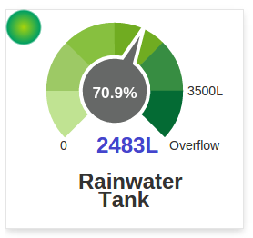
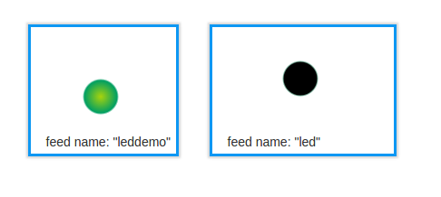

Dear community,
may I ask for your experience?
I'm sitting in front of a Mac running Safari and Firefox on the latest Mac OS Yosemite.
AFAIK, the led widget should show a colored icons corresponding to its feed value.
When I'm logged-in to emoncms, no led icon is shown but the feed value.
When I log off, a black led icon is shown independent from the feed value.
Demo to be found here: http://emoncms.org/Tricx/led
How does the led widget work for you?
Is there any working example or documentation available?
Maybe this is an issue with Mac OSX instead of emoncms or the led widget, don't know.
Thanks in advance,
Trickx
Re: [SOLVED] Behavior of LED widget
I use the LED to indicate the health of my 4-20mA current loops:
< 4mA Grey
> 20mA Red
otherwise Green.
I've not noticed any problems. I just tried Safari (V7.1) on OSX 10.9.5 (so not Yosemite) and that seems to work ok. I also surfed to your pointer above and see a black LED, so it doesn't look like it's browser related. What is the value in your feed? I can't remember where I found these now, but here's the list I've kept in my code:
//
// emoncms LED widget colours
//
#define LED_RED 0
#define LED_GREEN 1
#define LED_GREY 2
#define LED_BLUE 3
#define LED_PURPLE 4
#define LED_YELLOW 5
#define LED_BLACK 6
I'm hosting this on emoncms.org, which appears to be what you're doing as well. Have you set your feed to public?

Re: [SOLVED] Behavior of LED widget
dBC,
thanks for your comment.
Of course I forgot to change the feed to public.
Unfortunately, this explains just the different behaviors whether I'm logged in or not.
Since the feed is public, no led icon is shown anymore.
The feed value is 1 and should correspond to a green icon, which was never visible.
What do you see now?
Have you configured something else?
Re: [SOLVED] Behavior of LED widget
Now I see the attached, so it appears to be working (currently using Chromium on Linux at this end). No, I don't believe I had to configure anything else. Will try on Safari when I get a chance, and report back if I see anything different.

Re: [SOLVED] Behavior of LED widget
[SOLVED]
The trick is NOT to use "led" as feed name!.
If one feed name for a led widget is "led", all led widgets show strange behavior.
Re: [SOLVED] Behavior of LED widget
Very interesting. Thanks for the heads-up.
Re: [SOLVED] Behavior of LED widget
I think that's a general rule in most computer languages. Although most times the system won't get confused (although it does appear to have done so here), it's so easy to slip up when copying or editing and you can very easily have a very hard to spot problem.